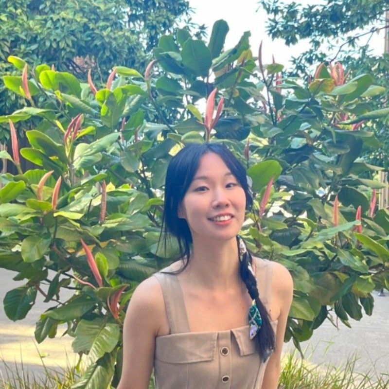

Research Associate at Columbia University studying the molecular mechanisms of Alzheimer's disease. Incoming PhD student in Computational Biology. Passionate about multi-omics, statistical genetics, and systems approaches to aging and neurological disorders.

About
I'm currently working as a Research Associate at Columbia University's Gertrude H. Sergievsky Center in statistical and functional genomics, with a focus on Alzheimer's disease. My research interests lie in computational and systems biology, especially in aging, oncology, and neuropsychological disorders, using multi-omics data analysis.
I have a solid foundation in biological signaling pathways and cellular mechanisms, supported by hands-on wet lab training. During my graduate studies, I also gained experience in causal inference and quantitative methods in epidemiological research.
I thrive in interdisciplinary environments, am a fast learner, and deeply value collaborative science — bridging dry and wet lab approaches in molecular and computational biology.
Research
Focused on Alzheimer's disease functional genomics, statistical fine-mapping, and multi-omics integration.
Expertise
Background
Contact
I'm always excited to discuss research, potential collaborations, or new opportunities in computational biology, statistical genetics, or multi-omics data science.
Send a Message